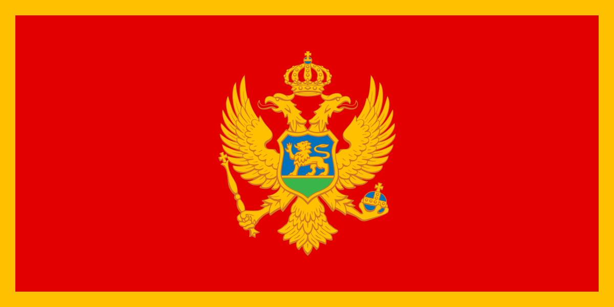

Montenegro Returns to Eurovision
After a two-year hiatus, RTCG confirms Montenegro's return to Eurovision 2025. Read more.
Your ultimate source for Eurovision news and music updates!
Here we provide feedback on Eurovision matters and everything else about music!
After a two-year hiatus, RTCG confirms Montenegro's return to Eurovision 2025. Read more.

Poland announces its finalists for Eurovision 2025. Learn more.
Learn more here.
The single "Scissors" is now on Spotify and plenty of other platforms. listen here, or here.